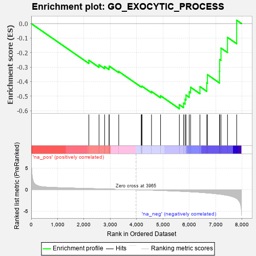
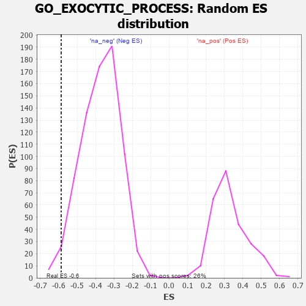

| | | Dataset | 7d |
| Phenotype | NoPhenotypeAvailable |
| Upregulated in class | na_neg |
| GeneSet | GO_EXOCYTIC_PROCESS |
| Enrichment Score (ES) | -0.5870523 |
| Normalized Enrichment Score (NES) | -1.5696398 |
| Nominal p-value | 0.017520215 |
| FDR q-value | 0.1213376 |
| FWER p-Value | 1.0 |
Table: GSEA Results Summary

Fig 1: Enrichment plot: GO_EXOCYTIC_PROCESS
Profile of the Running ES Score & Positions of GeneSet Members on the Rank Ordered List
| PROBE | GENE SYMBOL | GENE_TITLE | RANK IN GENE LIST | RANK METRIC SCORE | RUNNING ES | CORE ENRICHMENT | | 1 | SYK | | | 2186 | 0.278 | -0.2531 | No |
| 2 | YKT6 | | | 2571 | 0.217 | -0.2843 | No |
| 3 | SCFD1 | | | 2783 | 0.185 | -0.2962 | No |
| 4 | RAB10 | | | 2952 | 0.157 | -0.3049 | No |
| 5 | BTK | | | 2958 | 0.156 | -0.2932 | No |
| 6 | RAB8A | | | 3319 | 0.102 | -0.3305 | No |
| 7 | SYNJ1 | | | 4173 | -0.038 | -0.4348 | No |
| 8 | EXOC4 | | | 4182 | -0.039 | -0.4328 | No |
| 9 | VPS11 | | | 4202 | -0.041 | -0.4319 | No |
| 10 | STX2 | | | 4562 | -0.108 | -0.4686 | No |
| 11 | VAMP8 | | | 4905 | -0.179 | -0.4975 | No |
| 12 | VPS45 | | | 5618 | -0.350 | -0.5594 | Yes |
| 13 | VAMP7 | | | 5777 | -0.399 | -0.5478 | Yes |
| 14 | SNX4 | | | 5834 | -0.415 | -0.5221 | Yes |
| 15 | RAB13 | | | 5870 | -0.425 | -0.4929 | Yes |
| 16 | SYT9 | | | 5992 | -0.469 | -0.4711 | Yes |
| 17 | VAMP3 | | | 6043 | -0.487 | -0.4389 | Yes |
| 18 | RALB | | | 6399 | -0.617 | -0.4348 | Yes |
| 19 | VPS18 | | | 6659 | -0.743 | -0.4087 | Yes |
| 20 | CPLX1 | | | 6684 | -0.753 | -0.3522 | Yes |
| 21 | CFTR | | | 7143 | -1.030 | -0.3285 | Yes |
| 22 | SYT1 | | | 7148 | -1.033 | -0.2475 | Yes |
| 23 | OTOF | | | 7198 | -1.069 | -0.1692 | Yes |
| 24 | KCNB1 | | | 7444 | -1.327 | -0.0952 | Yes |
| 25 | GRIK5 | | | 7792 | -2.044 | 0.0225 | Yes |
Table: GSEA details [plain text format]

Fig 2: GO_EXOCYTIC_PROCESS: Random ES distribution
Gene set null distribution of ES for GO_EXOCYTIC_PROCESS